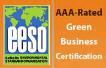
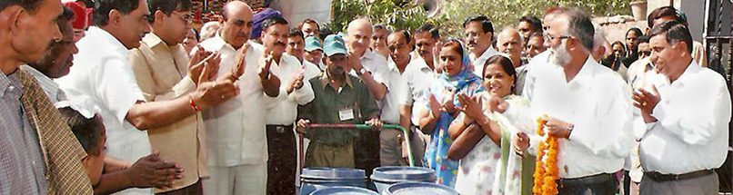
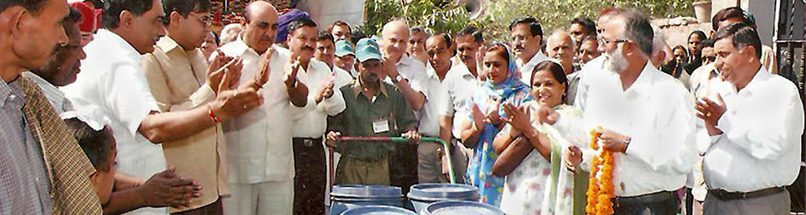

Welcome!
Exnora Green Pammal, a non-governmental Organization Exnora Green Pammal works with residents, authorities, schools and the private sector to minimize waste and pollution so that India's children will someday experience the pride and joy of living in a nation that ranks among the world's cleanest. organization pioneering responsible solid waste management since 1994.
�� Read more
Green Pammal - Pepsico
Since 2004, PepsiCo India Region has partly sponsored EGP's work in Pammal, Mangadu, Sangareddy and Panipat. In 2005, the PepsiCo Foundation sponsored the replication of EGP's model in Tenkasi, Cuddalore and Nagapattinam.
PepsiCo's sponsorship and steadfast commitment to improving the cleanliness of many localities demonstrates the ability of the private sector to make a difference as well as a profit.
�� Read more
We Work to make a reality of your desire
Exnora Green Pammal works with residents, authorities, schools and the private sector to minimize waste and pollution so that India's children will someday experience the pride and joy of living in a nation that ranks among the world's cleanest.



 
